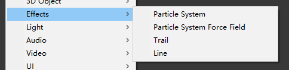
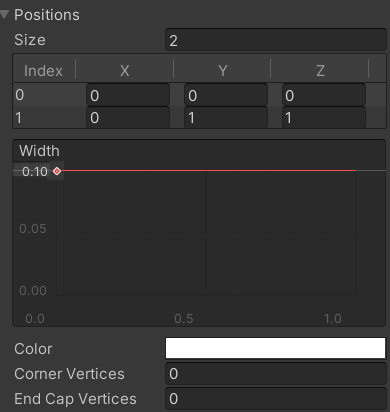

众所周知，在一款游戏中使用检测手法是十分常见的。比如说玩家自动来到某个地方触发剧情，判断子弹击中玩家的部位并造成相应血量。。。这其实都是碰撞检测的相关体现。但是，虽然碰撞检测在日常使用中相当普遍，但是碰撞检测也有相应的局限性。比如说APEX里恶灵被人拿枪指着时会有相应提示（感觉我的游戏偏好要在博客里面暴露光了），又或者是我们拿鼠标光标指向某些物体时显示出物体的具体信息（就比如像是城市模拟经营，我们想知道这个建筑具体是啥东西；又比如即时战略游戏我们想看一个兵种的具体血量等属性），那碰撞检测就显得见襟捉肘了。我总不能对着光标方向创建一个透明长方体来检测碰撞吧。但这样就显得很繁琐了。这时候我们就可以引入一个全新的检测手法：也就是射线检测了。我们可以像超市自动开关门那样引出一个射线，如果射线指向了某些特定属性的物体就会发出信号。这也是射线检测的基本方法。
射线是啥
在进入射线检测的正题前，我们先回顾一下小学的知识：射线是个啥？百度百科上写的是：具有特定能量的粒子束或光子束流。看到这里你肯定十分疑惑，因为我也很疑惑，然后我发现我复制粘贴错了。咳咳，射线实际上是：直线上的一点和它一旁的部分所组成的图形。它由一个起始点开始，向着一个方向放出无限长的线。当线与我们想要检测的物体重合就会发出信号。就实际例子上来说，我们在射击游戏中端着枪，枪口到远处就算是一个射线。虽然我很想把射线一次全部整完，但由于射线检测在2D和3D的区别还是蛮大的，所以还是分成两个部分一起说吧。
3D世界中的射线检测
咋检测的捏？
我们既然讲了射线检测的原理，那就直接上射线检测的代码8：
1 | Physics.Raycast(Vector3 origin,Vector3 direction,out RaycastHit hitinfo,float distance,int LayerMask); |
1.这个方法返回啥？
这个方法返回的是布尔类型的值，但是它害可以通过out返回一个RaycastHit结构体。
**out:**c#中特有的参数，可以不通过return返回变量。out后面的东西不需要赋值甚至实例化。
2.origin和direction可不可以合二为一？
其实Unity自身内置一个叫做Ray的类：
Ray ray=new ray(Vector3 origin,Vector3 direction)；这样就可以直接把两个Vector变量直接合成一个射线的Ray变量，代码内容也可以改成：
Physics.Raycast(ray,out RaycastHit hitinfo,float distance,int LayerMask);
3.这样射线检测我看不到，有什么办法显示射线吗？
如果想拿着这个代码去unity内部尝试的话，可以参考下面这个代码：
1 | Debug.DrawLine(Vector3 origin,Vector3 destination,Color color); |
当然，如果你是想显示特定的射线的样子，就可以改成：
Debug.DrawLine(ray.origin,ray.origin+ray.direction,Color.red);
但是你可能会发现Scene窗口看到的实在是太短了，原因是我们线段终点有点短，所以可以尝试在终点后面乘上个100甚至是1000
4.RaycastHit感觉不如碰撞检测。。。功能
RaycastHit很有用，结构体内除了位置坐标以外还有检测到物体的碰撞体。这意味着我们可以获取这个物体的相关组件了：
hit.collider.gameObject.GetComponent<RigidBody>();
或者hit.collider.gameObject.name
是不是很好用。
5.What’s up?你这Raycast只能测一个啊？！
raycasthit只有一个返回值，那如果我想获得所有在射线上的物体怎么办？
答案是使用RaycastAll:
1 | RaycastHit[] hits; |
6.你这LayerMask有问题啊？怎么是int？
LayerMask的形式是int，没错，不是字符而是int。它表示的是你涂层的序号的二次方倍，没错，二次方倍。这意味着你想检测的图层序号是第九层，但你在LayerMask这一变量里要输2的九次方，也就是512……
这个原因是Unity中以二维矩阵对LayerMask进行存储，所以要进行位运算。
我也针对这个写两个方法：
（1）public一个LayerMask然后在Inspector里面给它挂图层
（2）可以改写成LayerMask.GetMask("这里写图层名字");
6.5.你这LayerMask只能测一个图层？
如果你在LayerMask.GetMask("");前加~，这代表除了这个图层以外全部检测。这样射线检测就会绕过你指定的图层检测别的图层。
7.（因为重中之重一定要写最后）
一定要加上collider组件！！！
因为射线检测也是变相的射线和物体进行碰撞（好吧这是我瞎编的），所以务必加collider组件！
你可以让射线检测没有trigger的，但是绝不能检测没有加collider组件的。
咋应用的捏？
按照上面的说法，我们根本无法实现拿鼠标点击物体看属性的功能。因为射线只能给一个物体，鼠标怎么整呢？
我们直接整一个复杂的情景：
假如你是李华，你在某模拟经营类游戏（类似冰汽时代）要在某个崎岖不平的地上造建筑，需要在光标上预览建筑造好后怎么样。所以你光标在哪里建筑要跟到哪里，同时遇到山你的建筑要有些倾斜。
接下来我们就来解决这个问题（以下脚本要挂载到你要放的物体上）：
1 | private void FixedUpdate(){ |
但是这么做可能会有一个严重的问题：你的建筑会一直朝镜头飞。

原因很简单：你检测的是第一个碰撞体。而如果你的建筑有碰撞体，检测到的碰撞体不是地面而是你的建筑。这样point就一直是你的前面，就会一直朝建筑飞。
解决的方法有两种：
1.把建筑的碰撞体关了，然后建好了碰撞体开开
2.调整图层，把地面放到单独的图层里
这么做还有个不太严重的问题：建筑一半会陷进地面里。

因为你的建筑位置坐标是你建筑的中心坐标，也就是point坐标。
解决方法也很简单，在上面做个空物体，把该物体上移建筑的半格，把它作为空物体的子物体，就可以了。这样它的坐标变成了空物体的中心坐标，也就是建筑的底部。
后面确认建造可以写：
Instantiate(prefab,transform.position,transform.rotation);
其实射线检测在3D世界上还有很多应用：
1.就Unity官方给出的例子来看，可以确定空投物资的降落伞什么时候打开：通过在物资下做一条有距离限制的射线检测，一检测到地面就开降落伞。
。。。（你省略害搁着打个1.干嘛）
3D好像也没啥讲的了，就这么多把
2D世界中的射线检测
咋检测的捏？
2D和3D的代码是类似的，2D代码如下：
1 | Physics2D.Raycast(Vector2 origin,Vector2 direction,float distance,int LayerMask,float minDepth,float maxDepth); |
看似只是在Physics后面加了2D，但实际上2D和3D是有很多区别的（不然也不会特地做一个部分了）。
0.Z轴，寄！
首先最明显的就是z轴没有用了：transform.forward指向z轴方向，所以在2D的场景里只会指向屏幕内，根本就没有了作用。
1.Ray，寄！
上文提到过，Ray这个类是由两个Vector3变量构造而成的，而2D世界都是Vector2，自然Ray这个类就与2D无缘了，只能用俩Vector2变量表示了。
2.返回类型（作为方法最明显的不同了属于是）
不像3D的返回类型是一个布尔类型的变量，2D返回的是RaycastHit2D的结构体类型。这个结构体类型和3D的结构体类型相似，也是储存着射线的相关信息以及检测到的碰撞体信息。比如说point就储存射线和碰撞体交汇的坐标，很是方便。
3.小tips
在现实的游戏中，发出射线检测的物体基本都是具有碰撞体的（比如怪物或者炮台什么的）。这就引发了一个问题：当从物体中心点发出时，检测到的第一个碰撞体却是自己，射线根本出不去。那我们该怎么解决这个问题呢？答案是Physics2D.queriesStartInColliders=false;queries:询问，start:开始，incolliders:在碰撞体内。这样如果碰撞体是我们射线所在起点的内部时，我们不让它返回该碰撞体。这样就可以完美解决问题了。
4.还有两种重载。。。
但用的少而且比较复杂，就不在这里延申了。
5.（因为重中之重一定要写最后，虽然前面已经有了但是还是要粘贴一波）
一定要加上collider组件！！！
因为射线检测也是变相的射线和物体进行碰撞（好吧这是我瞎编的），所以务必加collider组件！
你可以让射线检测没有trigger的，但是绝不能检测没有加collider组件的。
其它的就没了
咋应用的捏？
还是整一个复杂的例子：
你想在TopDown游戏（比如元气骑士）中做一个激光束，激光束打到墙面会被墙面阻隔，打到人身上会掉血（为了方便直接写了GameOver）。而我们要从游戏视觉到内部判定上把这个功能实现出来。
内部判定
内部判定很简单，如下：
1 | private void Detect() |
视觉实现（LineRenderer组件）
检测方面还是好写的。但如果我们要在实际的游戏画面中也要把这条射线给显示出来，使用DrawLine和DrawRay方法是无法胜任的。因为它们只能在Scene窗口内看到一条辅助线，而不是Game窗口里。
针对这个方法，我们可以使用Unity自带的LineRenderer来实现：

LineRenderer是用于在游戏场景内对一条线段进行渲染。它的主要参数有很多，我们只讲几个重要的：

（1）Position
众所周知，两点确定一条线段，而Position里面的两个index就是两个点的位置。index1是线段的起点，而index2则是线段的终点。
这里有个SetPosition方法：
1 | LineRenderer.SetPosition(int index,Vector3 position); |
（2） Width
对线段的宽度进行设置。因为Width是一条线，所以你可以控制线段上的每一个点的粗细（什么金箍棒）
（3）Color
对线段的颜色进行设置。但因为是线段，所以你可以设置一个渐变的颜色，甚至是某些位置的透明度（哇哦，好几把炫酷）
而这个颜色的类名也不能是Color了，而是Gradient（渐变色）
（4）End CapVertices
对线段末端的圆滑度进行设置。如果这个数值是0，那线段末端就是一个正方。如果这个数值越大，末端也会更加圆滑，最后趋近于一个半圆。
(5)Use World Space
将Position里的坐标转化为世界坐标。不勾选这个的话我们就无法正确的让线段显示出来。
有了这个，视觉方面就好做了：
1 | private LineRenderer lineRenderer; |
这样就差不多了。
射线检测的一些缺点
射线检测，寄！
在讲了这么多射线检测后，我还是想要明确一下射线检测的缺陷：在检测的范围不是一根线段而是一个面积的图形时，射线检测就显得有些见襟捉肘。比如说：我想在平台跳跃游戏中使用射线检测检测玩家是否与地面相碰。因为如果我们不这么做玩家就可以无限按跳跃键达到飞天的效果(bushi。在这里使用射线检测就会造成一些问题：

如图，玩家依旧在地板上，但是由于中间超过一半部位已经离开了地板，导致在玩家中心点往下的射线检测并没有检测到地板。这样的结果就是玩家在这个地方本来可以跳却跳不起来。我们想要检测一定范围内的碰撞体，而射线检测却无法达到这个效果。
难道，就没有办法了吗？
OverLap的妙用
面对这个问题，Unity自然有解决方法：那就是OverLap方法。它的功能和射线检测大致类似，但是它并不是产生一条射线，而是产生一个形状，比如圆形(OverLapCircle)，方形(OverLapBox)等。这些方法的区别仅仅是形状不一样，而其他都是大致相同的。
1 | Collider2D collider=Physics2D.OverLapCircle(Vector2 point, float radius, int layerMask, float minDepth, float maxDepth);//point:圆心的点所在坐标，因为是位置坐标所以使用Vector2表示//radius：圆的半径//LayerMask：图层，虽然物体都处在一个2D世界中，但都有着图层之分。如果输入图层的序号就可以“只”检测这个图层的相应物体，而其它图层的物体即使被射线扫到了也没有任何卵用//minDepth,maxDepth:检测确定Z轴的范围内的物体。但是由于都是使用Sorting Layers来调整物体而不是Z轴坐标，所以不是很常用。只要知道就行，默认是无穷Collider2D OverlapBox=Physics2D.OverLapBox(Vector2 point, Vector2 size, float angle, int layerMask, float minDepth, float maxDepth);//point:长方体中心点所在坐标，因为是位置坐标所以使用Vector2表示//size：长方体的长和宽，因为要有长和宽两个数所以使用Vector2表示//angle:长方体要倾斜的角度//LayerMask：图层，虽然物体都处在一个2D世界中，但都有着图层之分。如果输入图层的序号就可以“只”检测这个图层的相应物体，而其它图层的物体即使被射线扫到了也没有任何卵用//minDepth,maxDepth:检测确定Z轴的范围内的物体。但是由于都是使用Sorting Layers来调整物体而不是Z轴坐标，所以不是很常用。只要知道就行，默认是无穷 |
方法和射线检测类似，但是又有些许的不同，比如：
1.返回值不一样
OverLap的返回值是collider2D，也就是碰撞体，不像射线检测是返回hitInfo那种结构体了。
2.适用范围不一样
看到Physics2D也知道，OverLap只适用于2D世界，而不是2D、3D全适用了。
通过这个方法，我们可以在玩家碰撞体的正下面做一个OverLap检测，这样就可以完美解决跳跃检测的问题了。
其它
如何像DrawLine那样显示出整个检测范围？
答案是使用gizmos:
1 | private void OnDrawGizmos(){ Gizmos.DrawWireSphere(transform.position,radius); Gizmos.Color=Color.Red;} |
为什么平台跳跃中贴着墙掉不下去？
答案是所有碰撞体和刚体的材质都默认有摩擦力，只要你新建一个物理材质然后把摩擦力调整为0然后挂载到墙壁的刚体上就不会这样了。
如何检测该形状范围内的所有碰撞体？
答案是OverLap***All方法，这个方法和之前射线检测的一样，可以返回所有碰撞体.
总结一下
射线检测在Unity游戏制作中还是十分重要的。但和碰撞检测不同，射线检测在2D和3D的世界使用方面上还是有着不同的。并且，由于射线检测仅仅是一条射线的范围，在某些游戏某些功能的实现上还是有着局限性。为此OverLap这种可以检测一定范围的方法可以更加胜任这些工作。在文中2D中射线检测以及OverLap的介绍并没有3D中的那么详细，这是因为避免文章的重复性。基本上3D部分提到但是2D和OverLap没有提到的功能和注意在2D和OverLap上也是适用的。比如这些检测方法都需要碰撞体，都可以采用在后面加All的方法检测范围内的所有碰撞体的物体，LayerMask是int等等，还望大家谅解。
若没有本文 Issue，您可以使用 Comment 模版新建。